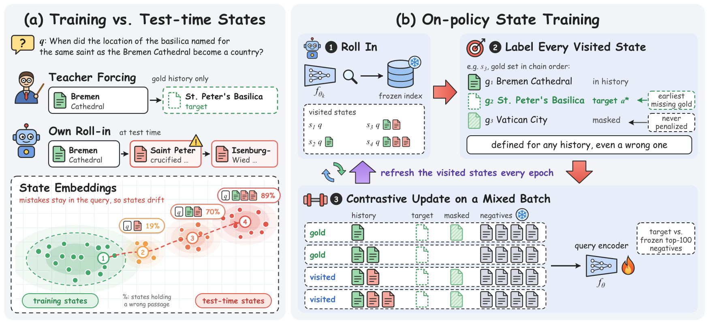
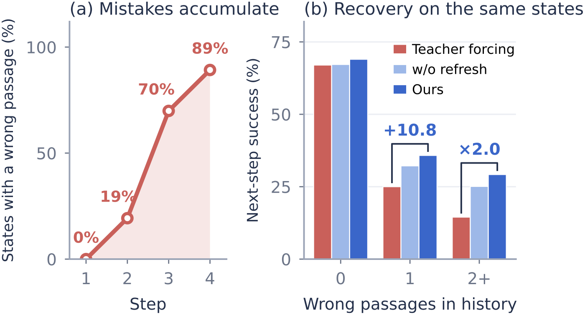

Contents · 9 sections
1What problem is it actually solving?2The pipeline: change only the training states3After a mistake, which passage is the positive?4Why run the model again every epoch?5How well does it work?6Which part does the work?7Limitations as I see them8How a search team could try it9VerdictSHARE
This paper shows that chain embedding retrievers for multi-hop retrieval see different histories in training and in use, and fixes it without adding any LLM call. At each step such a retriever joins the question with the passages found so far to look for the next one. In training its history holds only correct passages, but in use it holds the passages it found itself, which are often wrong, so one early wrong passage stays in every later step. On four-hop MuSiQue questions, 70% of the retrieval states already contain a wrong passage by the third step. The authors' fix: every epoch, let the current model run on the training questions, and train it on the states it actually reaches, wrong ones included, with the earliest still-missing correct passage as the target. With the same model and training recipe, the share of questions whose full evidence is in the top five rises from 44.6% to 50.5%; when the history already holds two or more wrong passages, the rate of finding a correct passage next goes from 14.5% to 29.2%, twice as often. Retrievers also suffer from a gap between training and test histories, and training on their own mistakes closes part of it.
What problem is it actually solving?
First, how a chain retriever works. A complex question needs several pieces of evidence, and the retriever collects them in steps. Step one searches with the question alone and gets one passage. Step two joins the question and that passage into one text, encodes it again into a query vector and searches again, and so on, adding one passage per step. After a fixed number of steps (4 on MuSiQue), the final ranking lists the passages retrieved at those steps first, followed by all other passages ordered by the best score they got at any step, which is why top-five and top-ten metrics still apply. Below, this text of question plus retrieved passages is called a "retrieval state", and "history" means the passages already retrieved in it.
The paper's opening example is a question like: "When did the location of the basilica named for the same saint as the Bremen Cathedral become a country?" The correct chain is Bremen Cathedral, then St. Peter's Basilica, then Vatican City. Here is how the history differs between training and use (chain from the paper's Figure 1, illustrative):
| Step | History in training | History in use | Retrieved in use |
|---|---|---|---|
| 1 | empty | empty | Bremen Cathedral (right) |
| 2 | Bremen Cathedral | Bremen Cathedral | the life of Saint Peter (wrong) |
| 3 | Bremen Cathedral, St. Peter's Basilica | Bremen Cathedral, life of Saint Peter | a passage about Isenburg (wrong) |
In training, the history is always made of passages from the reference answer, so the model only learns "everything so far is right, which passage comes next". In use, the wrong passage about Saint Peter's life from step two stays in the query text for every later step, and the model faces an input it never saw in training.
This is not rare. The authors ran a chain retriever trained the usual way on the MuSiQue test set and counted only states that still miss a correct passage. On four-hop questions, 19% of the states at step two already hold a wrong passage, and 89% at step four, which shows that wrong passages pile up. With a clean history the retriever finds a missing correct passage next 67% of the time; with a wrong passage in the history only 28%, meaning that once it goes wrong it usually cannot get back.
Part of that gap is because questions with wrong passages are harder to begin with. The authors ran a counterfactual check: delete the wrong passages from these states, keep everything else, and let the same model choose the next passage. Success rises from 20.8% to 32.1%, so the wrong passages alone cost it 11.3 points. The paper calls this gap between training and test histories the state mismatch, the familiar exposure bias of sequence generation.

The pipeline: change only the training states
The method is called on-policy state training. The authors deliberately change one variable: which retrieval states are fed to the query encoder during training. Architecture, loss, negative rule and passage index all stay the same as in usual training, so any difference can only come from the states.
Each epoch has three steps:
| Step | What happens | Output |
|---|---|---|
| Run | The current encoder retrieves greedily for 4 steps on the 1,800 training questions | Every state it really reaches, including those with wrong passages |
| Label | Each state's target is the earliest gold passage not yet retrieved | One positive per state |
| Mixed training | Half reached states, half gold-history states, trained contrastively | An updated encoder, which runs again next epoch |
Gold passages here are the annotated evidence passages of the dataset, in reasoning-chain order. The key division of labor: the target is defined by the gold set alone, so any history, even one with wrong passages, gets a clear positive. Now the parts one by one.
After a mistake, which passage is the positive?
Usual training never faces this, because the history is always right and the positive is simply the next passage on the chain. Once a wrong passage is in the history, "what to find next" has to be defined again.
The paper's rule is simple: list the gold passages this state has not retrieved yet, and take the earliest one in chain order as the positive. In the example above, the step-three history is Bremen Cathedral plus the life of Saint Peter; the missing gold passages are St. Peter's Basilica and Vatican City, so the positive is St. Peter's Basilica. The wrong passage stays in the history, and what the model learns is to get back on the right path while carrying it.
Why also take the other missing gold passages out of the negatives? Because jumping straight to Vatican City is also progress and should not be punished. If Vatican City stayed in the denominator of the contrastive loss, retrieving it would count as an error. This matters more for comparison questions, where the compared entities have no fixed order; chain order only decides which passage gets the gradient this time.
As a formula, the loss for state is
where is the inner product of the query vector and passage 's embedding, is the positive defined above, is the temperature, and the denominator holds the positive plus the negatives but not the other missing gold passages. Intuitively this is standard InfoNCE, with the positive replaced by "the earliest passage still missing".
This positive needs no LLM judgment and no reward model, so labeling costs nothing. That is the main difference from reinforcement learning methods such as Search-R1 and Q-RAG, which use the outcome of a whole episode as the reward: they get one sparse score per question at the end, while here every step has a positive.
Why run the model again every epoch?
Would error states collected once be enough? The authors compared several options, and the experiments below show they are not. The reason is that the mistakes a model makes change as it learns: errors from the first epoch may disappear after two more, and new ones appear. Collected once, the training data stays stuck on the old model's errors. Hoot says

Swipe or use the arrows for the three steps. This paper's contribution is training the retrieval encoder on error states it actually reaches, not only on gold histories. An error state is a point mid-retrieval where gold passages are still missing. A to E are illustrative state types. Source: illustrative example of per-epoch recollection in the paper's §4
Concretely: before each epoch, the current encoder runs 4 steps on the training questions, every state that still misses a gold passage is recorded, duplicates are removed, and about 2,350 are sampled uniformly to replace the previous epoch's half. The other half, about 2,350 gold-history states, stays fixed. In the first epoch there is no model of its own yet, so an encoder trained the usual way does the run; it only supplies states and is not used to initialize the parameters.
Why not replace everything with reached states? The gold half keeps the cases the model rarely reaches, such as long all-correct histories on hard questions. In the appendix, reached states alone get about 80% of the gain of the best mix, and the equal mix beats reached states alone by 1.2 points.
Everything else is held fixed on purpose. Passage embeddings are computed once with the frozen Qwen3-Embedding-0.6B, and only the query side is changed with LoRA. Negatives are drawn from the frozen encoder's top 100 by the same rule in both regimes. This rules out another explanation: if negatives also became harder with the current model, the gain could come from negatives rather than states.
How well does it work?
First, the comparison with other systems. The table shows the mean over five seeds on MuSiQue (C@5 is the share of questions whose gold passages are all in the top five):
| Method | LLM call at retrieval | R@5 | C@5 |
|---|---|---|---|
| Frozen encoder, question only | No | 55.1 | 18.9 |
| HippoRAG 2 (LLM-built graph) | Yes | 58.2 | 23.1 |
| MDR (released two-hop chain retriever, trained on HotpotQA) | No | 58.3 | 31.9 |
| Q-RAG | No | 61.7 | 36.2 |
| Search-R1 (7B model searching as it reasons) | Yes | 66.7 | 36.5 |
| On-policy state training | No | 73.5 | 49.3 |
This shows that a 0.6B chain retriever that calls no LLM at retrieval time already beats LLM-built graphs and a 7B search agent at collecting complete evidence. Most of that gain comes from training a chain retriever at all: usual training with the same encoder and recipe already reaches 44.6, above Search-R1's 36.5. Changing the training states then lifts it from 44.6 to 50.5 under the same seed.

The most convincing experiment is the right side of Figure 3, which tests whether the gain really comes from recovering after mistakes. The authors fix 3,403 states reached by the usual model and let the usually trained encoder and the new method's encoder each choose the next passage. With a clean history their success rates are 67.0% and 69.0%, nearly equal. With one wrong passage in the history, the usual model gets 25.0% and the new method 35.8%. With two or more, the usual model drops to 14.5%, while the new method gets 29.2%. This shows the new method did not make the model better across the board; it got better exactly where the state mismatch predicts.
The deletion check agrees. On the same 1,358 states with wrong passages, the wrong passages cost the usual model 11.3 points and the new model only 2.2. The new model on the original states with wrong passages (33.1%) even does slightly better than the usual model on states where the wrong passages have been deleted (32.1%).
Question answering follows. Giving each retriever's top five passages to the same reader model, the new method reaches 44.1 EM, usual training 38.6, and Search-R1's passages 35.5. The gain in complete evidence does carry through to answers.
Which part does the work?
A cheaper explanation would be that any wrong passages stuffed into the history would do, as when LLMs are trained with distractor passages. Table 4 separates the options; every row keeps half gold states and changes only the other half:
| Other half of training states | New each epoch | C@5 |
|---|---|---|
| Gold histories (usual training) | — | 44.6 |
| Synthetic states with randomly inserted wrong passages | No | 47.9 |
| Synthetic states with randomly inserted wrong passages | Yes | 47.1 |
| States from the first run, sampled once | No | 48.4 |
| States from the first run, resampled each epoch | Yes | 47.0 |
| A new run with the current model each epoch | Yes | 50.5 |
Synthetic wrong passages lift C@5 from 44.6 to 47.9, about half of the total gain, so having seen histories with wrong passages helps by itself. Real states collected once (48.4) are barely better than synthetic ones, so real mistakes are not special as such. Fresh samples each epoch are not enough either: resampled synthetic states give 47.1, and resampled states from the same run give 47.0. Only a new run with the current model reaches 50.5. The other half of the gain comes from training on the mistakes the model makes now, not from having more samples.
One more possible confound: different state texts also produce different mined negatives. The authors retrained with one shared negative pool for all states of a question; the gain falls from 5.9 to 3.8 points, so most of it remains, which shows it comes mainly from the histories, with the negatives a smaller part.
The gap is wider on longer chains. The paper builds HotpotQA-Long and 2Wiki-Long, with chains of 3 to 5 hops over corpora of 220,000 to 554,812 passages, and the model trained only on MuSiQue is not tuned again. Removing "run again every epoch" drops C@10 on HotpotQA-Long from 28.0 to 22.7, almost back to usual training's 22.3. The further the model is used from its training distribution, the more it needs to train on its current mistakes.
Limitations as I see them
First, the hardest questions are still unsolved. On four-hop MuSiQue questions, every retriever, this one included, completes fewer than 7% of chains in the top five; on the four- and five-hop chains of 2Wiki-Long, no retriever completes more than one in ten. All four steps must succeed, and a few extra points of recovery per step still multiply to little.
Second, retrieval latency grows noticeably. A single search with the question takes 0.017 s per question; four chain steps take 0.104 s. That is cheap next to a 7B search agent, but for a first-stage retriever that used to do one vector search it is a real cost, because every extra step encodes one more query and searches the index once more.
Training is also more expensive: 37 minutes for usual training against 60 minutes for the new method, the extra time going mostly to running the model again each epoch.
Third, it does not win everything on longer chains. On 2Wiki-Long, Search-R1's C@10 is 37.0, above its 32.8, and Search-R1 also leads on three-hop chains there. Also, only the main table averages five seeds; the ablations and analyses use a single seed, so differences of 1 to 2 points should be read with care.
How a search team could try it
Step one: measure your own state mismatch. Take an existing multi-step retrieval or query-rewriting chain, run it on questions with annotated evidence, and count how many states at steps two and three already hold a wrong result, and how often those states succeed next. If the share is low, stop here.
Step two: the cheapest version, inserting random wrong passages into gold histories for training. In the paper this alone gets about half the gain and needs no change to the training loop.
Step three: add a new run with the current model each epoch. In the paper training time grows from 37 to 60 minutes, with no LLM and no reward model, and targets come entirely from annotated evidence. Track the share of questions with complete evidence, not only average recall, because the gain concentrates there.
Step four: compare against beam search. In the paper, the usual model with 4 beams, encoding 13 queries, reaches only 46.3, below the new method's 50.5 with 4 greedy steps; this comparison tells you whether changing training is worth more than paying for extra inference.
Verdict
The one thing to take away: for a chain retriever, training data is not only about which positives and negatives you pick; who produced the history it sees in training matters just as much.
| Dimension | Assessment |
|---|---|
| Problem importance | High. Any retrieval chain that feeds earlier results into the next query has this mismatch, and by step three seven in ten states hold a wrong passage. |
| Method novelty | Medium. Letting the model follow its own choices and then telling it what each step should have been is an old idea from imitation learning, applied here to the query side of contrastive learning; what is new is that the gold set gives the positive for free, and the design of running again every epoch. |
| Experimental evidence | Strong. One variable changes, and the fixed-state recovery rates, passage deletion, synthetic wrong passages and shared negatives separate the sources of the gain clearly. |
| Engineering cost | Low to medium. Training takes 37 versus 60 minutes; inference is identical to a usual chain retriever, with no LLM. |
| Worth trying | Yes. Teams that already run multi-step retrieval and have evidence labels can insert synthetic wrong passages first, then add per-epoch runs; both steps are cheap. |
How did this read for you?
Hoot made a note. Thanks for the feedback.
One tap, no sign-in; tap again to undo. Only anonymous counts are kept, never who you are.
Discussion
Add experiment details, reproduction notes or a different take. Requires a GitHub sign-in.
Loading the discussion…